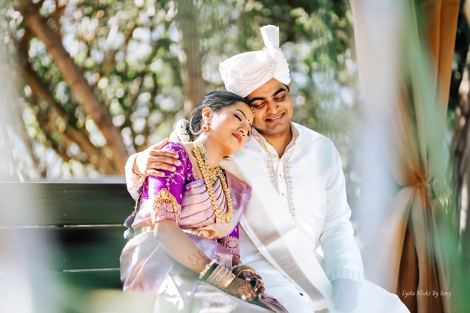

Wedding photography
A celebration.
A thousand feelings.
Indian wedding traditions, intimate portraits, and the joy of people coming together.
Use the arrow keys to browse the image viewer, and Escape to close.


Your story, next
Planning your celebration?
Planning your coverage
Every celebration has its own rhythm.
Your celebrations
Consider the ceremonies, traditions, and events you would like photographed.
Your people
Think about the family portraits, candid moments, and details that matter most to you.
Your story in motion
Let the photographer know whether you are interested in still photography, film, or both.